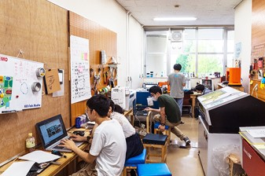

■神奈川大学経営学部は理学部と共に湘南ひらつかキャンパスであり豊かな自然の中という静かな環境のなかで学習ができる。
■基礎的な経営の講義からモノづくりのアイデアを提案する授業まで幅広い経営学を学べる。
■国際経営学科であるため国際色豊かな授業とともに世界で活躍できるスキルを養える
■キャンパス内にあるファブラボ平塚でアイデアを形にすることができる。ファブラボはデジタルからアナログまでの多様な工作機械を備えた市民工房で、学生だけでなく一般の方も利用できる。

ファブラボの様子
画像を押すとファブラボのサイトへ飛べます。
■経営学部のある湘南ひらつかキャンパスは静かに学べる反面、立地の悪さに定評がある。都心から離れていて尚且つ最寄り駅から30分バスに乗る必要がある。
■学ぶ意欲がない学生が多くまったく授業と呼べないものも多々ある。
経営学部なので経営を学ぶのはもちろんのこと、世の中に必要な便利なものアプリ、ソフトを多く輩出していきたいと考えている。アイデアだけにとどまらず、すぐにかたちに出していきたい。
自分から学ぶ意欲をもって物事に接していきたい。多くのことものに関わることによって、多くのことを学び問題解決能力の向上やアイデアの閃きに繋がると考えている。